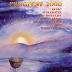

| Artist: | Various Artists |
| Title: | Progfest 2000 |
| Label: | Musea FGBG 3279.AR |
| Length(s): | 66/64 minutes |
| Year(s) of release: | 2001 |
| Month of review: | [07/2002] |
| 1) | Sora Ni Hikaru | 6.29 |
| 2) | Negai Kanaeru Kodomo | 5.10 |
| 3) | Hyoto | 5.04 |
| 4) | The Shadow Of Innsmouth | 6.05 |
| 5) | Mediterranean & Aryan | 4.25 |
Supersister
| 6) | Judy Goes On Holiday | 9.14 |
Mona Lisa
| 7) | Captif De La Nuit | 5.41 |
| 8) | Les Guerriers | 7.21 |
| 9) | Tripot | 4.27 |
| 10) | Les Sabots De Lena | 6.45 |
Spock's Beard
| 11) | Gibberish | 4.44 |
Disc 2 Rocket Scientists
| 1) | Dark Water/Earthbound | 9.00 |
| 2) | Aqua Vitae | 6.38 |
| 3) | In The Flesh?/Oblivion Days | 6.17 |
Codice
| 4) | Bitacora De Suenos | 8.41 |
| 5) | Dentro De La Mquina | 3.02 |
| 6) | Espiritus En Movimiento I/Eva/Espiritus En Movimiento II/ Salmo 150 | 8.11 |
| 7) | Epilogo | 3.17 |
Tempus Fugit
| 8) | Never | 5.54 |
| 10) | Goblin's Trail | 4.45 |
The reformed Supersister, still with Sacha van Geest then, who died during the summer of 2001, are represented by a sole song: Judy Goes On Holiday, which clearly shows what they were about: whimsicalness combined with complex progressive and experimental music.
Especially Mona Lisa's guitar sound regularly reminds of their big brother (at least as far as fame and fortune are concerned) Ange. And even though singer Dominique Le Guennec can't quite compete with Christian Decamps, the band's material makes for good listening.
Spock's Beard is represented by just one track on this compilation, but they've played at the festival before, so they've nothing to complain. Granted, Neal Morse's voice can't easily be mistaken for someone else's, but I feel this track in its multiple voicing might just as well be an Echolyn track.
Rocket Scientists more or less combine the strengths of American and European progressive music, creating a rather accessible (well, for prog, at least), yet somewhat complex sound. The possibility exists they might have heard some Pink Floyd at some time during their lives.
Codice plays a set of mostly instrumental music, vocals are sparse, with lots of organ and guitar, outplaying most of the bands in this genre mostly played by French and Spanish speaking artists. The fact remains, though, that I tend to lose attention after a bit.
It doesn't take a leap to move from Codice to Tempus Fugit, in fact, the change over would easily go unnoticed for the not to astute listener. Not that the bands sound completely the same, Tempus Fugit's sound is clearer, more open, but both are bands with mostly instrumental music, dominated by keys and guitar. Tempus Fugit does offer, however, a more varied, and thus more interesting, set.